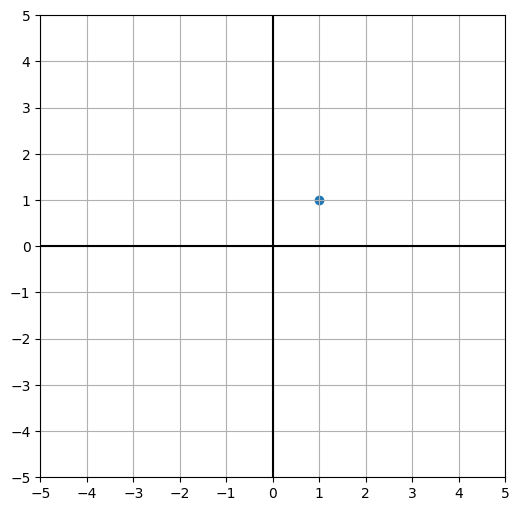
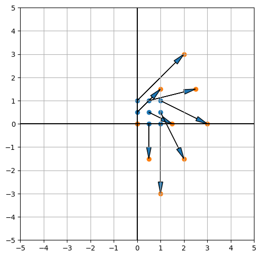
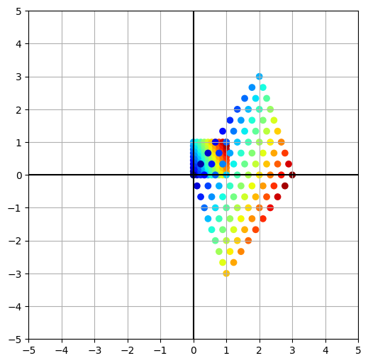

Contents
import numpy as np
import matplotlib.pyplot as plt
def plane(xmin=[-5, 5], ymin=[-5, 5]):
plt.plot(xmin, [0, 0], color="black")
plt.plot([0, 0], ymin, color="black")
plt.xlim(xmin)
plt.ylim(ymin)
plt.xticks(np.arange(xmin[0], xmin[1]+1))
plt.yticks(np.arange(ymin[0], ymin[1]+1))
plt.grid()
x = np.array([1, 1])
plt.figure(figsize=[6, 6])
plt.scatter(x[0], x[1])
plane()
None

A = np.array([[1, 2], [-3, 3]])
y = A @ x
print(y)
plt.figure(figsize=[6, 6])
plt.scatter(x[0], x[1])
plt.scatter(y[0], y[1])
plt.arrow(*x, *(y-x), head_width=0.2, head_length=0.5, length_includes_head=True)
plane()
None
[3 0]
x1 = np.repeat(np.linspace(0, 1, 3), 3)
x2 = np.tile(np.linspace(0, 1, 3), 3)
X = np.vstack([x1, x2])
A = np.array([[1, 2], [-3, 3]])
Y = A @ X
plt.figure(figsize=[6, 6])
plt.scatter(X[0], X[1])
plt.scatter(Y[0], Y[1])
for i in range(9):
# if i % 10 in (0, 5, 9):
x = X[:, i]
y = Y[:, i]
plt.arrow(*x, *(y-x), head_width=0.2, head_length=0.5, length_includes_head=True)
plane()
None

import matplotlib.cm as cm
x1 = np.repeat(np.linspace(0, 1, 10), 10)
x2 = np.tile(np.linspace(0, 1, 10), 10)
X = np.vstack([x1, x2])
A = np.array([[1, 2], [-3, 3]])
Y = A @ X
plt.figure(figsize=[6, 6])
colors = cm.jet(0.7 * X[0] + 0.3 * X[1])
plt.scatter(X[0], X[1], color=colors)
plt.scatter(Y[0], Y[1], color=colors)
plane()
None

np.linalg.eig(A)
(array([2.+2.23606798j, 2.-2.23606798j]),
array([[0.25819889-0.57735027j, 0.25819889+0.57735027j],
[0.77459667+0.j , 0.77459667-0.j ]]))
import matplotlib.cm as cm
x1 = np.repeat(np.linspace(0, 1, 10), 10)
x2 = np.tile(np.linspace(0, 1, 10), 10)
X = np.vstack([x1, x2])
A = np.array([[-1, 0], [0, -1]])
Y = A @ X
plt.figure(figsize=[6, 6])
colors = cm.jet(0.7 * X[0] + 0.3 * X[1])
plt.scatter(X[0], X[1], color=colors)
plt.scatter(Y[0], Y[1], color=colors)
plane()
None

np.linalg.eig(A)
(array([-1., -1.]),
array([[1., 0.],
[0., 1.]]))